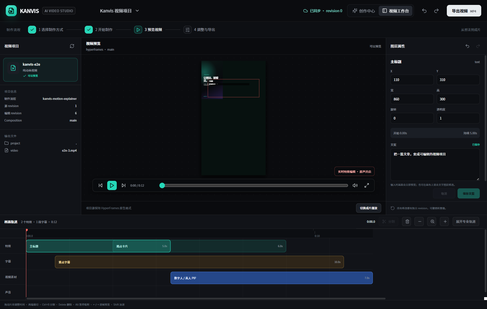

01
Kanvis Studio
本地优先的视频剪辑工作台，类剪映时间轴、AI字幕编辑、可插拔渲染引擎。可独立使用，也可嵌入 Codex / Obsidian。kanvis-video 默认内置。
已开源
查看源码

AI BUSINESS PRACTICE · PUBLIC BUILD
用 AI，把你的专业变成一门自己说了算的生意。
我正在公开构建 Kanvis：把 Agent、Skill、知识库和内容工作流，接进真实的获客、产品与经营场景。
知识库与 SOP · AI 工具箱 · 每周案例拆解 · 康哥本人答疑
¥299 / 年 · 先从一个真实问题开始 · 具体权益见本页说明
BUILDING IN PUBLIC
先做真正能被使用的最小产品，再由真实反馈决定下一步。
本地优先的视频剪辑工作台，类剪映时间轴、AI字幕编辑、可插拔渲染引擎。可独立使用，也可嵌入 Codex / Obsidian。kanvis-video 默认内置。
把文章、课程稿或口播内容整理成结构化视频任务，连接脚本、数字人、字幕、镜头与可编辑项目。
把 Obsidian 里的带图长文一键排版，并送入 X Article 与微信公众号草稿流程；默认只进草稿，不自动发布。当前为 Beta，部分平台链路仍在真实环境验收。
按经营任务整理 Kanvis 自有 Skill 与优秀开源 Skill，覆盖研究、写作、图片、PPT、视频和自动化。群友原创 Skill 持续收录中。
OPEN SKILL ECOSYSTEM
开源创作者 Eric 做了一个很棒的视频 Skill，我收录到 Kanvis 开放生态里展示。如果你也在做 AI 工具，欢迎提交。
把文章、笔记、截图、课程资料自动铸成带编号的 Miora 风格中文知识卡片，再导出可编辑的 Remotion 视频。支持横版/竖版，小红书/抖音/通用三种平台风格。
如果你也做了好用的 AI 工具或 Skill，欢迎提交到开放生态。好的 Skill 我帮你收录、帮你展示。独立创作者一起做大。
ABOUT
AI 工具越来越多，但工具本身不是生意。真正重要的是找到一个值得解决、有人愿意付费的问题，再把专业能力连接成内容、产品、成交与交付。
Kanvis 是我给这套 AI 协作系统起的名字，灵感来自 Jarvis。我会把 Skill、工作流和工具放进真实的内容与经营任务里，公开构建过程，也记录那些没有跑通的版本。
现在的 Kanvis 是一条内容视频流水线：从文章到分镜、从分镜到工作台、从工作台到可发布的成片。这只是起点。
长期方向是让 AI 进入经营的每一个环节——选题、内容、获客、交付、复盘——形成一个可检查、可恢复、可演进的 AI 经营系统。
COURSE / 课程
给有专业积累、但还没有形成稳定内容生产系统的人。用 Claude Code、Codex、Skill、知识库和 Kanvis 工具，把素材、图文与视频任务接成一条可复用的工作流。
从"用工具"到"建系统"的思维转变，明确 AI 在经营中的角色。
Codex、Skill 调用、知识库配置与任务协作基础。
用 AI 辅助选题、结构化脚本与口播文案生成。
配音、数字人、字幕、分镜到可编辑视频项目。
数据可视化、演示文稿与视觉素材快速产出。
使用 Kanvis Content OS 管理选题、脚本、素材和视频任务。
把内容工作流接入获客、交付与复盘，形成可复用经营系统。
首期课程已开放，点击查看完整课程说明并报名。
SERVICES / 服务与合作
公开项目先让你看到 Kanvis 怎么工作；如果你有明确的经营问题、企业 AI 场景或商务合作目标，可以带着背景直接沟通。
围绕一个真实的内容获客或 AI 系统落地问题，陪你把目标、流程和工具接起来，完成一轮可执行、可复盘的实践。
面向有明确业务目标、项目负责人和执行团队的企业，从一个高价值场景开始，让 AI 真正进入业务流程。
面向希望触达创作者、AI 实践者与小团队的 AI 产品、品牌和生态伙伴。
¥980 录播主课，系统学习从选题、脚本到可编辑视频的 AI 内容生产工作流。包含 Kanvis Content OS 插件与学员社群。
BEFORE CONTACT / 沟通前请准备
企业、品牌或产品，以及希望沟通的合作类型。
当前最想解决的问题，以及希望达成的业务结果。
团队角色、现有流程、工具、数据和项目负责人。
时间计划、交付形式、预算范围和必要背景。
CONTACT / 商务联系
无论你正在解决内容获客、企业 AI 落地，还是希望围绕 AI 产品与品牌展开合作，都可以扫码添加微信。简单说说你目前的情况、目标和时间计划，我们先从最值得推进的一步开始。
经营咨询 · 企业 AI 赋能 · AI 产品与品牌合作具体合作范围、周期与费用会根据目标和交付复杂度确认；产品体验与品牌内容会基于真实使用，并明确合作关系。
RESOURCES / 资源
你可以先从开源 Skill 和本地工作台开始；正在内测或规划中的产品会明确标注状态。
查找图片、PPT、视频与内容工作流。
了解 Codex 入口、Obsidian 集成与本地渲染流程。
查看源码、版本与公开构建记录。
Kanvis Content OS 插件正在内测，暂未开放公开下载。
FAQ / 常见问题
关于 Kanvis 视频流水线、本地工作台和服务方式的常见疑问。
Kanvis Video 和 Kanvis Studio 基于 MIT 开源，免费使用。云端供应商（HeyGen、MiniMax 等）费用按用量自付。课程和服务是付费的。
熟悉 Codex 或类似 AI 编程工具。如果你是创作者但不是开发者，建议先从课程入手。
不是一次性生成不可修改的视频，而是把文章重新导演成可检查、可恢复、可替换供应商的视频项目。每次编辑都落到真实工程中的轨道、片段、字幕和特效上。
只处理用户拥有或明确获授权的素材。新声音或新数字人先生成 10-15 秒预览，再决定是否生成完整视频。
工程、聊天记录和版本数据保存在本机；密钥只通过环境变量配置，不写入仓库或日志。未配置的云端能力不会影响本地编辑。
已经开始使用 AI、但还没有形成稳定内容生产系统的创作者；有真实经营问题、希望让 AI 进入业务流程的小团队主理人。
七项核心交付：①《赚钱思维》完整资料；② AI 商业实践知识库；③ AI Skill 与工具箱；④ 内容与经营 SOP；⑤ AI 商业案例持续拆解；⑥ 共学群交流；⑦ 康哥本人答疑。具体内容和开放状态以当前社群公告与实际交付为准。
Kanvis 开放 Skill 生态是免费的——任何人都可以浏览和使用收录的 Skill，也可以提交自己的 Skill。好的 Skill 我帮你收录到官网展示，不收费，不绑定。
Kanvis AI商业实践社群是付费的——¥299 / 年，获得知识库、SOP、AI 工具、商业案例、共学交流与康哥本人答疑。
两者完全独立：提交 Skill 不需要付费，付费也不影响 Skill 是否被收录。社群里的人可能做出好 Skill，但 Skill 质量是唯一收录标准。
当前加入价格为 ¥299 / 年。后续价格、续费和活动权益如有调整，以官网和正式公告为准，不做虚假限时承诺。
不重复，是递进关系。¥299 AI商业实践社群提供资源、实践节奏、案例交流和问题反馈，适合先解决具体卡点。¥980 课程用 10 章 39 节带你系统搭建 AI 内容生产工作流，适合希望完整跑通一条生产线的人。
课程（¥980）是录播学习 + 学员社群，你按自己的节奏搭建通用内容生产工作流。28 天实战营（¥6,800）围绕一个真实经营目标，在康哥直接参与下完成目标拆解、流程搭建、真实运行和复盘。简单说：课程教你“怎么做”，实战营陪你把一轮实践跑起来。
申请制，先沟通确认目标是否适合。正式实践分三个阶段：① 第 1 周明确具体目标，拆解现状与约束；② 第 2–3 周搭建人和 AI 协作的流程，在真实任务中运行；③ 第 4 周完成可运行版本，复盘结果并确定下一轮迭代方向。全程由康哥直接参与。
START HERE
¥299 / 年加入 Kanvis AI商业实践社群，从知识库、工具、案例与康哥本人答疑开始，把一个真实问题继续往前推进。
立即支付 ¥299 加入社群还没准备好？参与产品内测 / 填写需求 · GitHub · X